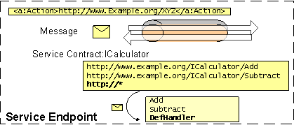
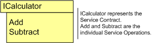
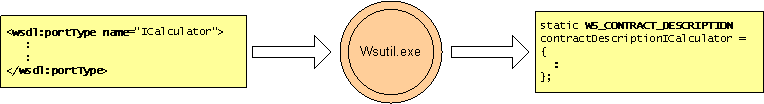

title: Contract description: A service contract carries metadata that defines how a service to handles channel messages. ms.assetid: 670530bf-344b-4480-8357-8984d80c0c68 keywords:
A service contract carries metadata that defines how a service to handles channel messages.
A WS_SERVICE_CONTRACT carries metadata for a service to handle a WS_MESSAGE.

It has a WS_CONTRACT_DESCRIPTION and a function table. An application can optionally specify WS_SERVICE_MESSAGE_RECEIVE_CALLBACK.
If a WS_CONTRACT_DESCRIPTION and a function table are not given, the application is required to specify WS_SERVICE_MESSAGE_RECEIVE_CALLBACK.

static WS_SERVICE_CONTRACT calculatorContract =
{
&calculatorContractDescription,
NULL,
&calculatorFunctions,
};
See the calculator example for details.
Contract Description
WS_CONTRACT_DESCRIPTION is metadata defining the type-contract of the service. Generated by wsutil.exe.
In terms of WSDL, a WS_CONTRACT_DESCRIPTION maps to a wsdl:portType. For each wsdl:portType in the WSDL document a separate WS_CONTRACT_DESCRIPTION will be generated.
A contract description is made up of one or more service operations. These operations are given as an array of WS_OPERATION_DESCRIPTION.

<wsdl:definitions xmlns:soap="https://schemas.xmlsoap.org/wsdl/soap/"
xmlns:wsu="https://docs.oasis-open.org/wss/2004/01/oasis-200401-wss-wssecurity-utility-1.0.xsd"
xmlns:soapenc="https://schemas.xmlsoap.org/soap/encoding/" xmlns:tns="https://Example.org"
xmlns:wsa="https://schemas.xmlsoap.org/ws/2004/08/addressing" xmlns:wsp="https://schemas.xmlsoap.org/ws/2004/09/policy"
xmlns:wsap="https://schemas.xmlsoap.org/ws/2004/08/addressing/policy" xmlns:xsd="https://www.w3.org/2001/XMLSchema"
xmlns:msc="http://schemas.microsoft.com/ws/2005/12/wsdl/contract" xmlns:wsaw="https://www.w3.org/2006/05/addressing/wsdl"
xmlns:soap12="https://schemas.xmlsoap.org/wsdl/soap12/" xmlns:wsa10="https://www.w3.org/2005/08/addressing"
xmlns:wsx="https://schemas.xmlsoap.org/ws/2004/09/mex" targetNamespace="https://Example.org"
xmlns:wsdl="https://schemas.xmlsoap.org/wsdl/">
<wsdl:portType name="ICalculator">
<wsdl:operation name="Add">
<wsdl:input wsaw:Action="https://Example.org/ICalculator/Add"
message="tns:ICalculator_Add_InputMessage" />
<wsdl:output wsaw:Action="https://Example.org/ICalculator/AddResponse"
message="tns:ICalculator_Add_OutputMessage" />
</wsdl:operation>
</wsdl:portType>
</wsdl:definitions>
For details of wsdl:portType to WS_CONTRACT_DESCRIPTION conversion, see the WSDL output section.
Example: WS_CONTRACT_DESCRIPTION
static WS_CONTRACT_DESCRIPTION contractDescriptionICalculator =
{
WsCountOf(serviceOperationsICalculator),
serviceOperationsICalculator
};
Function Table
Function Table is a struct of function pointers representing each of the service operations in the service contract. The function table definition is also generated by wsutil.exe.
Example: Function Table
// Function Table
struct CalculatorServiceFunctionTable
{
AddOperation Add;
SubtractOperation Subtract;
};
// Populate the Function Table
static const CalculatorServiceFunctionTable calculatorFunctions = {Add, Subtract};
Using the WS_SERVICE_MESSAGE_RECEIVE_CALLBACK
WS_SERVICE_MESSAGE_RECEIVE_CALLBACK has a dual mutually exclusive role.
If a WS_CONTRACT_DESCRIPTION is specified on the WS_SERVICE_CONTRACT, this becomes the default message handler for all the actions which are not supported by the specified WS_CONTRACT_DESCRIPTION. Otherwise, if WS_CONTRACT_DESCRIPTION is not specified on the WS_SERVICE_CONTRACT, and the WS_SERVICE_MESSAGE_RECEIVE_CALLBACK is specified on the WS_SERVICE_CONTRACT all in coming messages are passed to this callback.
For more examples, please see
The following callbacks are part of the contract:
The following structures are part of the contract:
Â
Â